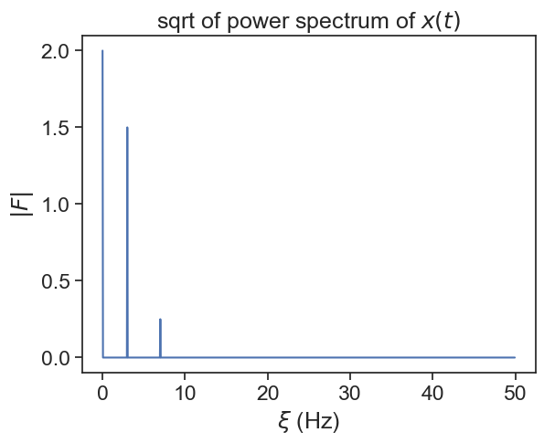

When studying the frequencies of a time series, we don’t actually calculate the Fourier transform, but the Discrete Fourier Transform (DFT).
\begin{split}
\text{continuous Fourier:}&\\
F(k) &= \int_{-\infty}^{\infty}x(t)e^{-2\pi i k t}dt\\
\text{discrete Fourier:}&\\
F_k &= \sum_{n=0}^{N-1} x_n e^{-2\pi i k \frac{n}{N}}
\end{split}
Clearly, in the discrete version, time t becomes the index n and frequency f becomes the index k. The Fourier transform yields a complex number for each value of the frequency \xi_k.
Let’s see this in action. We will calculate the Fourier transform of the function:
def my_dft(signal, dt): N =len(signal) k_index = np.arange(N) n = np.arange(N) F = []for ki in k_index: expon = np.exp(-2.0*np.pi*1j* ki * n / N) Fk = np.sum(signal * expon) F.append(Fk) k = build_k(N, dt)return k, np.array(F)/Ndef build_k(N, dt):if N%2==0: k = np.hstack([np.arange(0,N//2), np.arange(-N//2,0)])else: k = np.hstack([np.arange(0,(N-1)//2+1), np.arange(-(N-1)//2,0)])return k / (dt*N)
k_dft, dft = my_dft(x, dt)dft_abs = np.abs(dft)
plot power spectrum
fig, ax = plt.subplots()ax.plot(k_dft, dft_abs)ax.set(xlabel=r"$\xi$(Hz)", ylabel=r"$|F|$", title=r"sqrt of power spectrum of $x(t)$");
Why does this work the way it does?
The power spectrum of any real-valued signal is symmetric between positive and negative frequencies, so let’s plot only the positive frequencies:
plot power spectrum
halfN = N//2fig, ax = plt.subplots()ax.plot(k_dft[:halfN], dft_abs[:halfN])ax.set(xlabel=r"$\xi$(Hz)", ylabel=r"$|F|$", title=r"sqrt of power spectrum of $x(t)$");

43.2 FFT
The Fast Fourier Transform is a very efficient algorithm to calculate the DFT. Derek Muller (Veritasium) made a great video on this topic.
We can from now on use scipy’s implementation of the FFT.